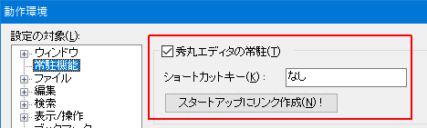

[HME0027A]
●起動時に秀丸が現れて邪魔だ

- Windowsが起動した直後に（無題）の秀丸エディタが勝手に開き、困っています。

-
「スタートアップフォルダ」にある、秀丸エディタのショートカットが原因です。
本来は「実行時の大きさ」が「最小化」ですが「通常のウィンドウ」になっていると思います。「その他」→「動作環境」→「常駐機能」 → 「秀丸エディタの常駐」の設定を操作する事で、正しいショートカットを作成する事が出来ます。
動作環境ダイアログを「OK」で閉じる際に、この設定に従い「スタートアップフォルダ」へショートカットの作成/削除が行われる為、以下の操作をすることでショートカットが一度削除され、新しいショートカットが再作成されます。
- 「秀丸エディタの常駐」をOFFにして、動作環境ダイアログを「OK」で閉じる。
- 「秀丸エディタの常駐」をONにして、動作環境ダイアログを「OK」で閉じる。

Ver.8.89より「スタートアップにリンク作成」ボタンが追加されたので、そのボタンを押せば正しいショートカットが作成されます。
- [補足]
- 「スタートアップフォルダ」に作成されるショートカットは、Ver.8.50から秀丸エディタ本体(hidemaru.exe)ではなく、別のプログラム(HmResident.exe)になっています。